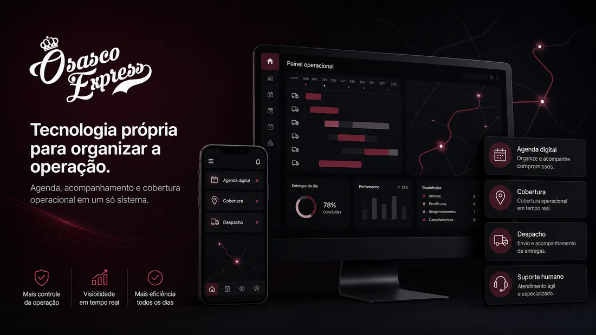
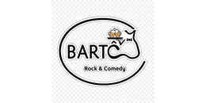
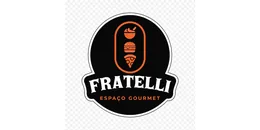
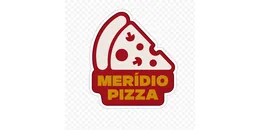
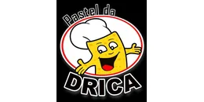

Cobertura operacional
Organização de parceiros autônomos conforme demanda, região, horário e viabilidade.
Operação de entregas para empresas em Osasco e região
A Osasco Express estrutura entregas para restaurantes, transportadoras, e-commerces, farmácias, clínicas, comércios e empresas locais que precisam de previsibilidade, suporte humano e capacidade operacional.
Diagnóstico gratuito conforme região, horário, volume, tipo de entrega e viabilidade operacional.

O problema que a operação sente
Quando a operação cresce, a entrega passa a exigir disponibilidade, cobertura, comunicação, despacho, acompanhamento e continuidade.
Organização de parceiros autônomos conforme demanda, região, horário e viabilidade.
Apoio no fluxo entre pedido, preparo, separação, expedição e entrega.
Atendimento para acompanhar comunicação quando a demanda exige resposta.
Proposta construída com dados operacionais, não só urgência ou tentativa.
Comece pelo diagnóstico
O diagnóstico considera volume, horários de pico, região, raio de atendimento, tipo de entrega, canais de venda e necessidade de cobertura.
Quero entender minha operaçãoO que a Osasco Express entrega
A Osasco Express não atua só no acionamento de entregadores. O trabalho combina base local, agenda de disponibilidade, tecnologia, suporte e acompanhamento.
Base local organizada por cadastro, disponibilidade, região, aceite e demanda operacional.
Ferramenta própria para apoiar planejamento de dias, horários e oportunidades operacionais.
A operação pode considerar preparo, prioridade, proximidade, fila ou lógica definida com o cliente.
Acompanhamento da comunicação e apoio à recomposição quando viável e combinada.
Informações organizadas ajudam o cliente a acompanhar rotina e custo operacional.
Alinhamento inicial de canais, regras, ponto de coleta e forma de acionamento.
Soluções por segmento
Não vendemos uma promessa genérica. Primeiro entendemos a operação, depois indicamos o modelo possível.
Organização para pedidos próprios, plataformas, picos de movimento e comunicação com o ponto.
Apoio local para volume, coleta, última milha e necessidades recorrentes em Osasco e região.
Entregas locais, retirada, recorrência e suporte para operações que vendem direto.
Operações sensíveis, documentos, pequenos volumes e rotinas que exigem cuidado.
Tecnologia própria com suporte humano
A agenda apoia a organização de parceiros autônomos, dias, horários, reservas e reaberturas. Ela não substitui suporte, comunicação e responsabilidade operacional.
Prova operacional
Parte da nossa operação é construída com empresas locais que precisam de cobertura, comunicação e acompanhamento.




Próximo passo
Solicite um diagnóstico gratuito e receba uma orientação conforme volume, região, horário e operação.